人工智能芯片导论
这个课是真的坑，考试两个ppt只考了其中一个，而且还是很多政治内容的那个ppt。
另外，都26年了，还考25年预计达到多少多少数据，老师你脑子呢😂，我真没招了。
01. AI 背景介绍
- 世界三大尖端技术：$空间技术+能源技术+人工智能$
AI的应用：$人脸识别，智能医疗，智能语音，自动驾驶，智能机器人$
深度学习：CNN 的网络组成：
- 卷积层：卷积运算提取输入的不同特征
- 池化层：对输入的特征图进行压缩，简化计算；另一方面进行特征压缩，取其最大、最小或平均值，得到新的、维度较小的特征。
- 线性整流层：引入非线性，之后就可以逼近任意函数。
- 全连接层：把所有局部特征结合变成全局特征，用来计算最后每一类的得分。
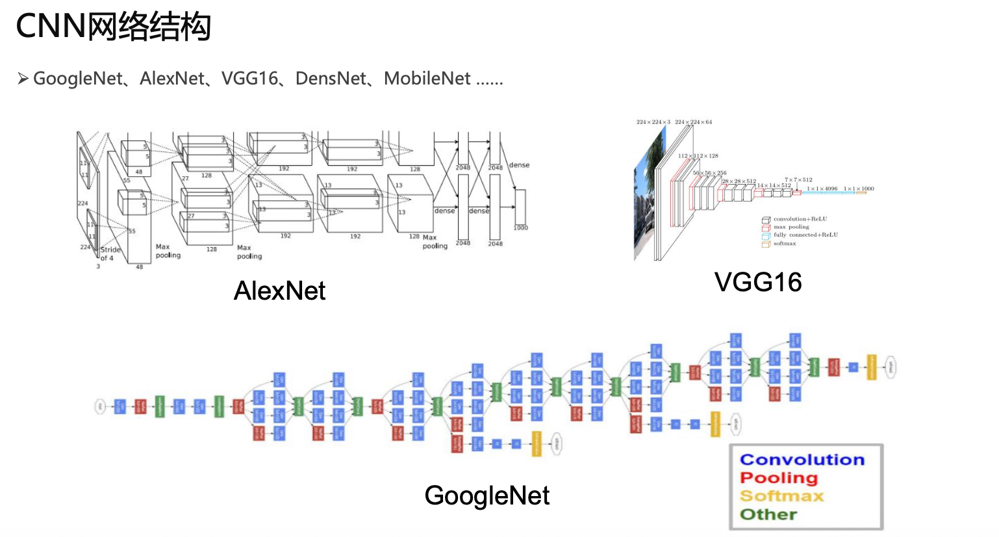
02. CNN IP方案介绍
CNN 计算特点：
- 操作相对固定
- 计算量大
- 需要带宽大
CNN IP方案分类（4种）：
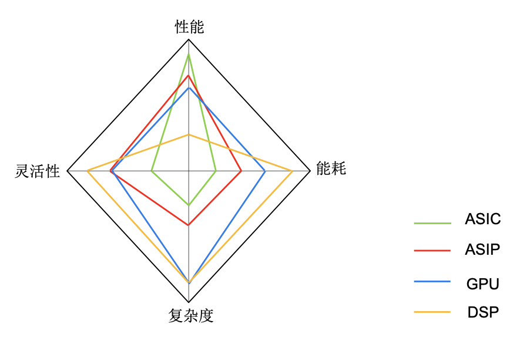
1. ASIC类-NVDLA
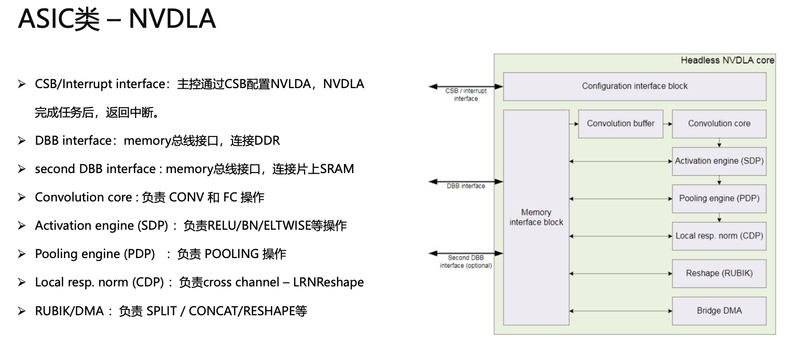
2. ASIP类-寒武纪/云天励飞NNP
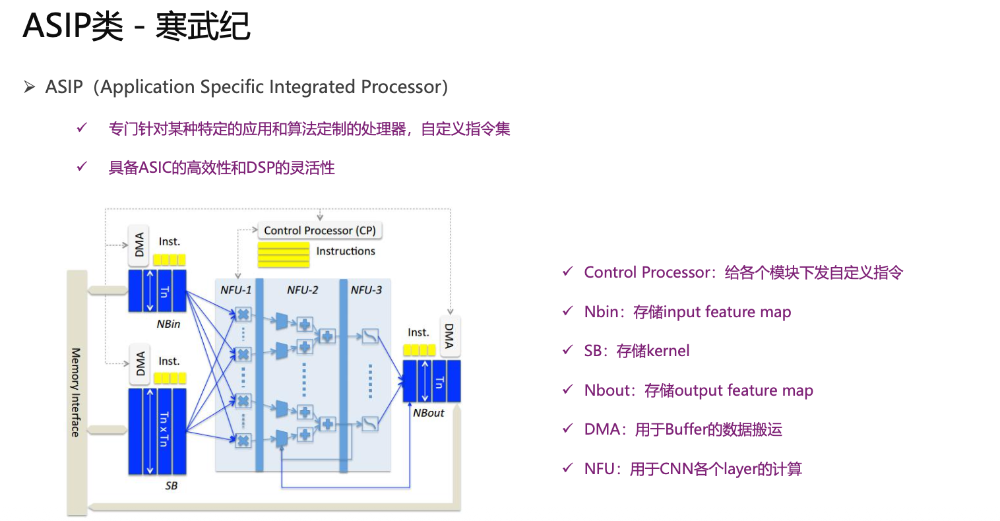
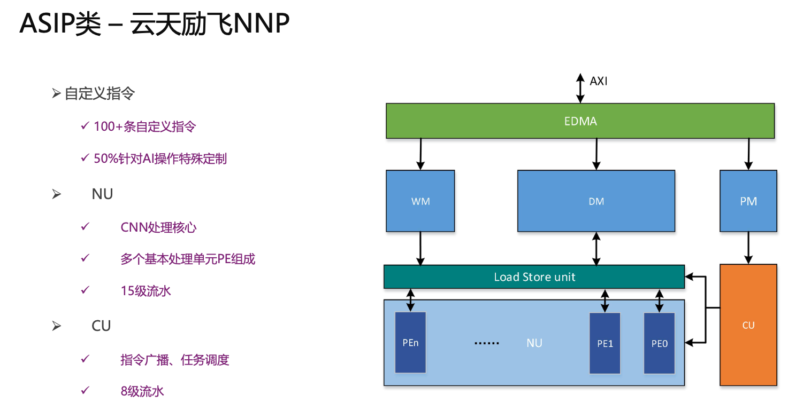
3. GPU类-NVIDIA
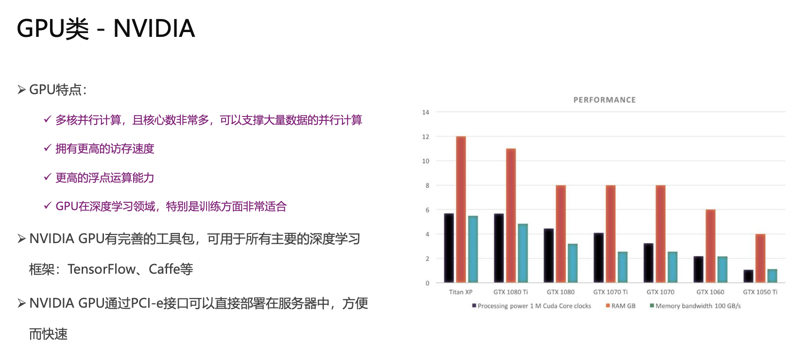
4. DSP类-Cadence VP6
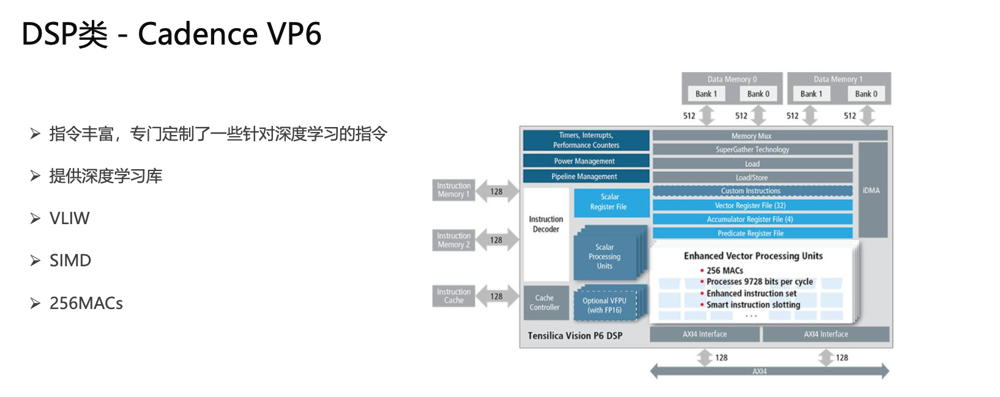
03. AI ASIP处理器架构设计
1. 算法/产品需求分析
2. 软硬件切割
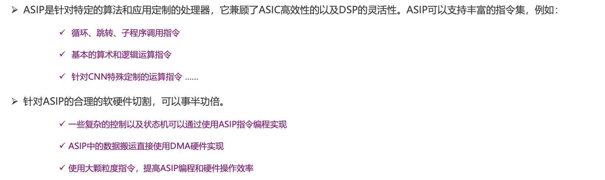
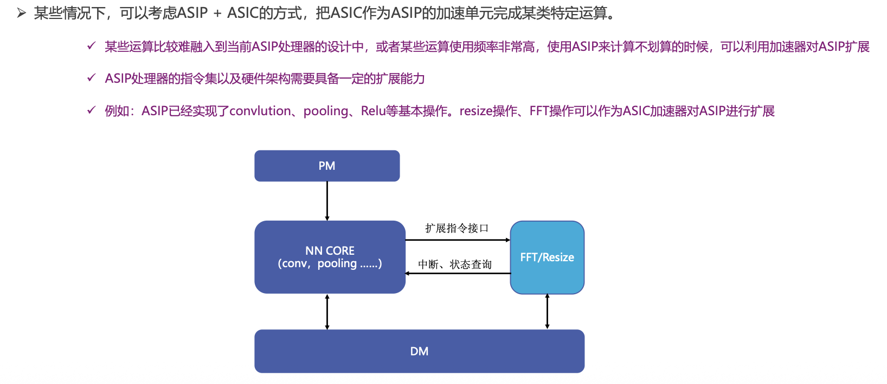
3. 架构定义
- AI ASIP处理器架构设计重点：
$数据重用，Weight重用，计算并行度，DDR带宽，MAC利用率，硬件拓展性，初步流水时序，后端可实现性$
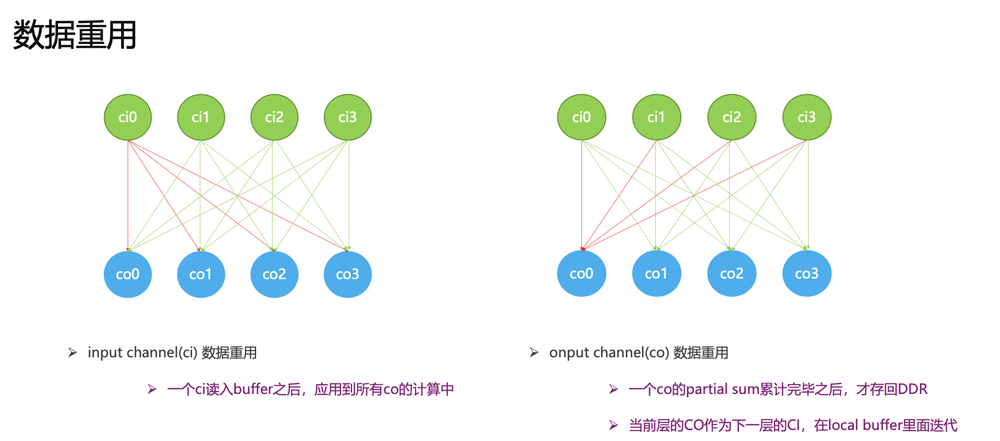
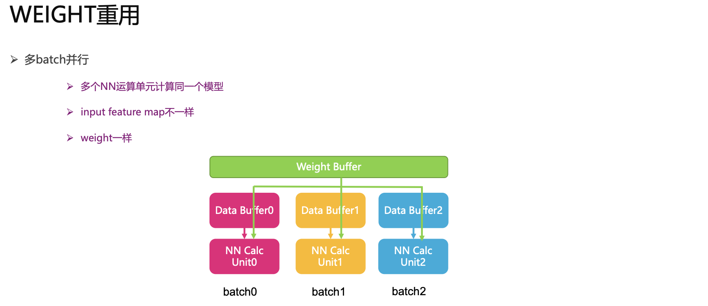
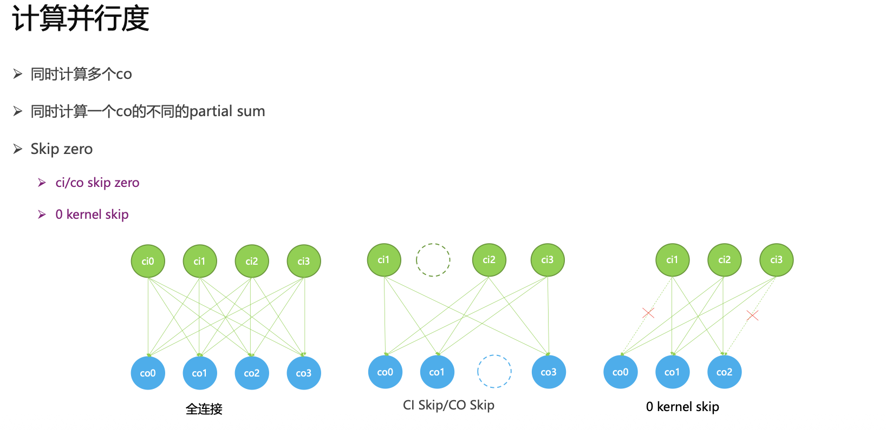
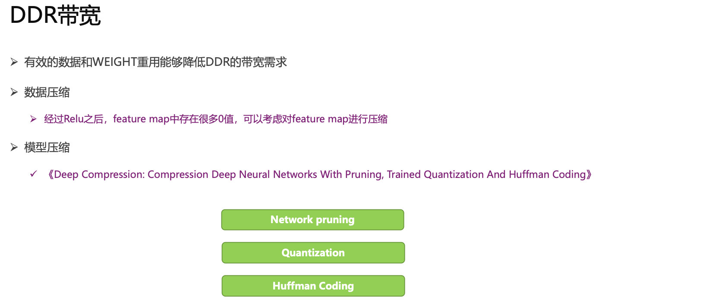
4. 指令集定义
两类指令：
- 基本指令：用于控制和NN Core调度 （循环，跳转，算术逻辑运算指令）
- NN指令：用于CNN计算
指令集的规整以及拓展性
- 指令的颗粒度：
- 大颗粒度：例如定义了一条convlution指令，一条指令能够执行成千上万个cycle。特点：效率高
- 小颗粒度：例如convlution操作通过使用乘法指令和加法指令编程完成，特点：灵活
5. 指令集模拟器（ISS）开发
指令集模拟器：利用高级语言编写的ASIP处理器模型。
可用于ASIP处理器架构设计阶段对处理器架构的性能仿真的工具。并且可用于后续RTL验证以及软件开发的参考模型。
- ISS分类：
- behavior model：
- 没有时序概念，只能模拟处理器行为。
- 用于ASIP处理器架构设计阶段，用于快速建模，并对处理器架构进行评估以及调整。
- 可以作为RTL验证阶段的参考模型。
- cycle accurate model:
- 有时序概念，每个cycle都可以与硬件完全比对。
- 用于后续软件开发的参考模型，能够反映出软件在ASIP处理器上运行的真实情况。
- behavior model：
6. ISS仿真&架构优化迭代
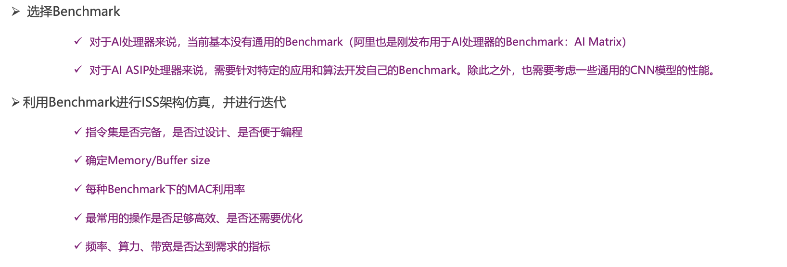
7. 确定微架构和指令集，进入开发阶段
04. AI ASIP处理器实现难点
1. AI ASIP处理器RTL开发过程中的注意事项
2. AI ASIP处理器验证过程中的难点
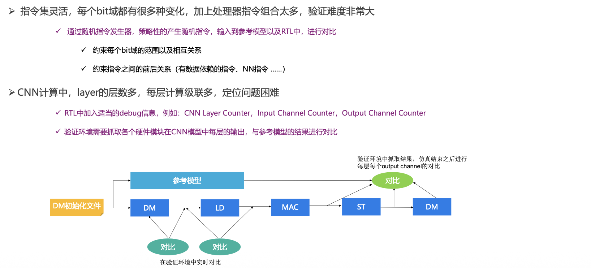
3. AI ASIP处理器物理实现的难点
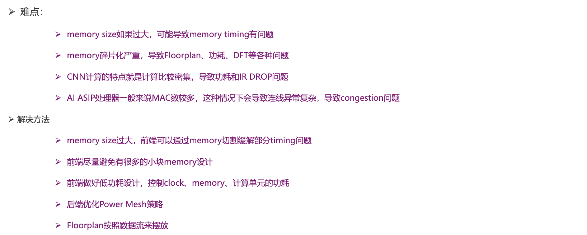
05. AI ASIP处理器配套工具链
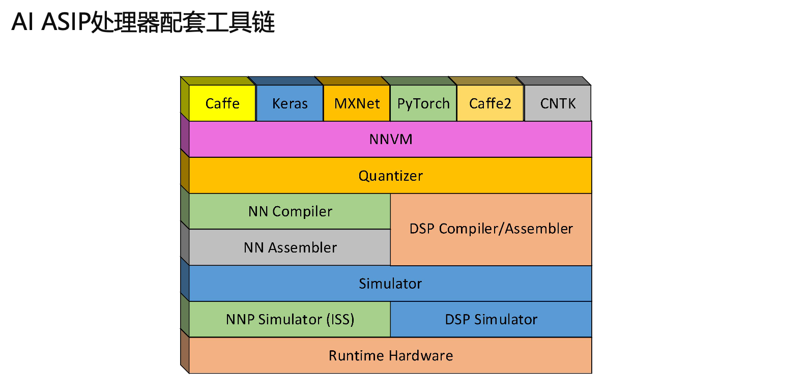
本博客所有文章除特别声明外，均采用 CC BY-NC-SA 4.0 许可协议。转载请注明来源 WENTAO's Blog！
评论